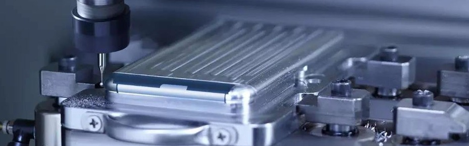

Rapid CNC Machining for Prototyping & Production
Make your parts right, make your parts fast.
CNC Machining Services
Zigitech provides a variety of precision CNC machining services including milling, turning, EDM (electrical discharge machining) and wire EDM, and surface grinding. With our precision 3-, 4- and 5-axis CNC machining centers, combined with other advanced capabilities and our experienced team, we can handle all technical aspects of creating your prototypes and parts, so your team can focus on bringing your product to market. If you need a precision machining company for plastic and metal CNC machining parts, Zigitech is the best place to go. Contact us today to get your manufacturing solution and details.

CNC Milling
Compared with CNC turning, CNC milling, especially 5 axis milling can be used to create complex 3D shapes or to apply a machined surface or features to parts made both plastics and metals. The advantage of multi-axis milling machines makes CNC milling process versatile, as well as accurate and repeatable, for creating many different types of part features of complex geometries. Example include holes, curves, slots, angled shapes, and channels. Milling is also ideal for making tooling for pressure die casting and plastic injection molding.

CNC Turning
CNC lathes allow us to get high-speed turning of both plastics and metals from bar or block material. The turning process allows the production of complex external and internal geometries, including generating all kinds of threads. For any round shaped components, for example, shafts, worms, spheres, CNC turning is a more efficient method compared with CNC milling. Zigitech’s turning capability can make prototypes all the way through mass production parts.